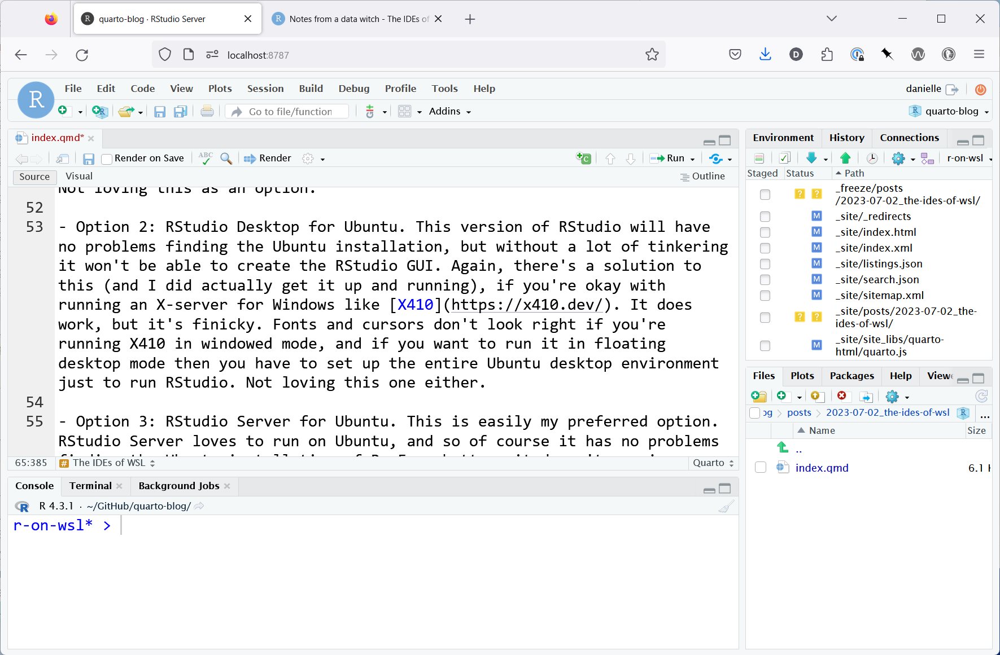
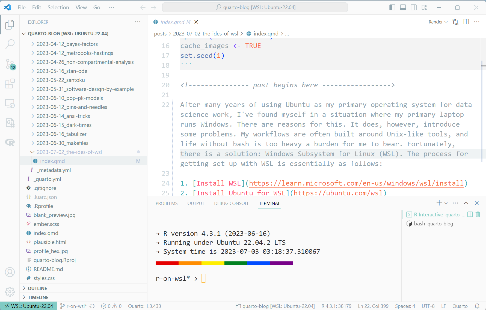
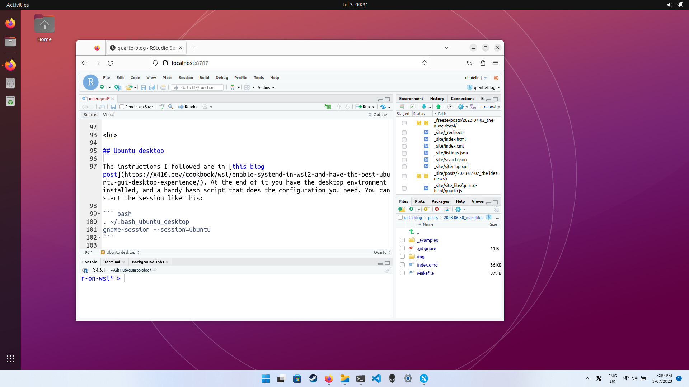

![]()
After many years of using Ubuntu as my primary operating system for data science work, I’ve found myself in a situation where my primary laptop runs Windows. There are reasons for this. It does, however, introduce some problems. My workflows are often built around Unix-like tools, and life without bash is too heavy a burden for me to bear. Fortunately, there is a solution: Windows Subsystem for Linux (WSL). The process for getting set up with WSL is essentially as follows:
Repeat step 3 for all the other command line tools you love (and replace step 2 with your favourite distro if you don’t love Ubuntu), and just like that you have a working setup for all your favourite data science workflows on Linux, living happily within a Windows environment.
Some bits are tricksy
There’s a sense in which WSL is a kind of dark magic, one that allows me to run two operating systems side by side on the same machine, and allowing extensive interoperability between them. By installing WSL and Ubuntu for WSL on my laptop, I’ve created a situation where I have two filesystems co-existing on my machine, and two qualitatively different kinds of shell to interact with them. On the Windows side I can use powershell, and on the Ubuntu side I can use bash. Regardless of which shell I use (and which operating system powers it), I have the ability to find files on both filesystems, as long as I know what paths to look for.
The key thing to understand is that Ubuntu mounts the Windows C: drive at /mnt/c/, and Windows locates the Ubuntu root directory at \\wsl.localhost\Ubuntu-22.04\. So, for instance, given that my Windows user is called strin,1 and my Ubuntu username is danielle, the paths to the user home directories are:
| Folder: | Ubuntu path (bash): | Windows path (powershell): |
|---|---|---|
| Ubuntu user directory | /home/danielle |
\\wsl.localhost\Ubuntu-22.04\home\danielle |
| Windows user directory | /mnt/c/Users/strin |
C:\Users\strin |
This illustrates some of the subtleties. Decisions need to be made about which files and applications should live in the Windows filesystem, and which should live in the Ubuntu filesystem. For example, I don’t use my Dropbox folder for data science work, so it lives in Windows at C:\Users\strin\Dropbox. On the other hand, my GitHub repositories are used mostly for data science and developer work, so they all live in Ubuntu and are all kept in the /home/danielle/GitHub folder.
It becomes trickier still when thinking about applications that require a GUI. The Ubuntu for WSL installation doesn’t come with a desktop environment. You certainly can install one, and if you’re willing to do the finicky work setting up an X server for Windows, you can in fact set things up so that Ubuntu for WSL has its own floating desktop environment in Windows (just like the one you’d get if you were running Ubuntu as a virtual machine). However, I don’t fancy doing all that work just to get a web browser up and running… so I made the practical decision that my Firefox installation should be the regular Windows version, living in Windows like any other Windows application.
The trickiness reaches its zenith when you start thinking about where your favourite IDE should live. At its heart an IDE is a GUI, and as such it’s going to run so much more smoothly if you install it as a Windows application. But IDEs are also used to start terminals, to write code, and execute all sorts of tasks that require access to the data science tooling… all of which live on Ubuntu.
How do we resolve this? In my case, I have two IDEs that I cannot live without. For my everyday work I am almost perfectly split between RStudio and VS Code. Here’s the approach I took with each.
RStudio setup
What are my options for RStudio?
Option 1: RStudio Desktop for Windows. If I go down this path the RStudio GUI will look very nice, but I won’t be able to use the Ubuntu installation of R. I’d have to install R for Windows, and then I’d have to configure RTools if I want to do developer work, and now I’d need C/C++ compilers on Windows, and… at that point I’d essentially have to manage an entire Windows data science stack in parallel with my Ubuntu data science stack. Not loving this as an option.
Option 2: RStudio Desktop for Ubuntu. This version of RStudio will have no problems finding the Ubuntu installation, but without a lot of tinkering it won’t be able to create the RStudio GUI. Again, there’s a solution to this (and I did actually get it up and running), if you’re okay with running an X-server for Windows like X410. It does work, but it’s finicky. Fonts and cursors don’t look right if you’re running X410 in windowed mode, and if you want to run it in floating desktop mode then you have to set up the entire Ubuntu desktop environment just to run RStudio. Not loving this one either.
Option 3: RStudio Server for Ubuntu. This is easily my preferred option. RStudio Server loves to run on Ubuntu, and so of course it has no problems finding the Ubuntu installation of R. Even better, it doesn’t require an Ubuntu desktop environment. When you start RStudio Server running from bash (
sudo rstudio-server start), it starts a server running (most likely athttp://localhost:8787/). Back on Windows, I can open up my browser and point it to that address, and can login using my Ubuntu username and password. Works beautifully. I have Ubuntu-native versions of R and RStudio Server, and a Windows-native RStudio GUI through the browser.
Having made my choice, I sort of know what I need to search for to solve the problem. There are good resources out there for this, and I’m not doing a walkthrough in this post. The purpose of the post is to document the approach I’ve taken so that I can remember how to do it next time, and point future-me at the right resources. That said, these are the resources I relied upon to set up option 3:
- Using RStudio Server in Windows WSL2
- RStudio Server
- What is my username on my RStudio Workbench / RStudio Server installation?
The result:

VS Code setup
Okay that’s RStudio sorted. What about VS Code?
The solution for VS Code is similar but not the same. The core principle is the same: the GUI should be native to Windows, and the underlying engine should be native to Ubuntu. The way you actually do this for VS Code, however, is slightly different. Essentially, what you want to do is install the Windows version of VS Code, and then – within VS Code – install the WSL extension. You’ll also need to install a bunch of other extensions too but that’s the normal experience for VS Code, for every language and every operating system.
As before, I’m not going to do a walkthrough, but these are the resources I used when getting VS Code set up properly on my Windows/Ubuntu-on-WSL box:
The result:

Ubuntu desktop
As a kind of postscript… it’s entirely possible to have a fully functional Ubuntu desktop in a setup like this. The main thing you need is an X server. I’ve no idea what the best X server for Windows options are: I went with X410 because it seems pretty professional and work has clearly gone into it, but you do have to pay actual money for it. There might be better options. Anyway, the instructions I followed are in this blog post. At the end of it you have the Ubuntu desktop environment installed, and a handy bash script that does the configuration you need. You can start the session like this:
. ~/.bash_ubuntu_desktop
gnome-session --session=ubuntuIf you’ve gone to the additional effort of setting up snap, and installing the Firefox snap on your Ubuntu system (yes, I do have two copies of Firefox on my machine), you can do something unbearably absurd like run R-within-RStudio-Server-within-Firefox-within-Ubuntu-desktop-within-Windows. Screenshot, simply to prove that I actually did this:

No, it’s not a very good idea.
Footnotes
A truncation of
stringrbelle, which I occasionally use as a username.↩︎
Reuse
Citation
@online{navarro2023,
author = {Navarro, Danielle},
title = {Beware the {IDEs} of {Windows} {(Subsystem} for {Linux)}},
date = {2023-07-02},
url = {https://blog.djnavarro.net/posts/2023-07-02_the-ides-of-wsl},
langid = {en}
}